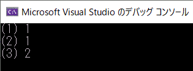

c++ のラムダ式について記載します。
ラムダ式は、簡潔に関数オブジェクトを記述する機能です。
以下のように記述します。
[ キャプチャー ] ( 仮引数リスト ) -> 戻り値の型 { 複合文 }
それぞれの役割と記述法は以下の通りです。
キャプチャーには、ラムダ式から参照するオブジェクトを指定します。ラムダ式はキャプチャーで指定しない限り、ラムダ式が定義されたスコープで宣言されているオブジェクトを使用できません。
キャプチャーには以下の２種類があり、オブジェクトごとに指定できます。
●参照キャプチャー ⇒ オブジェクトが参照で渡される
●コピーキャプチャー
⇒ オブジェクトのコピーが渡される
| 記述 | 結果 |
|---|---|
| [=] | すべてのオブジェクトをコピーキャプチャ。メンバ関数内であれば、this もキャプチャされる。 |
| [&] | すべてのオブジェクトを参照キャプチャ。 |
| [v] | オブジェクト v をコピーキャプチャ。 |
| [&v] | オブジェクト v を参照キャプチャ。 |
| [=,&v] | オブジェクト v を参照キャプチャ、それ以外をコピーキャプチャ。 |
| [&,v] | オブジェクト v をコピーキャプチャ、それ以外を参照キャプチャ。 |
たとえば、オブジェクト a と b をコピーキャプチャ、 c と d を参照キャプチャする場合は、以下のように記述します。
[ a, b, &c, &d ]
ラムダ式の関数呼び出し演算子は、仮引数リストの後ろに mutable を指定していない限り、 const 修飾されており、コピーキャプチャしたオブジェクトの書き換えをできません。
ラムダ式の中でコピーキャプチャしたオブジェクトの書き換えを行いたい場合、仮引数リストに続いて、 mutable を指定する必要があります。
int i;
[i]()-> void { i = 1; }; // エラー：ラムダ式の中で、コピーキャプチャオブジェクトを変更できない
[i]() mutable -> void { i = 1; }; // ＯＫ：mutable を指定しているので変更可能
参照キャプチャしたオブジェクトの cv属性 は引き継がれます。そのため、const宣言されたオブジェクトを参照キャプチャーした場合、ラムダ式の中でオブジェクトの値を変更することはできません。
仮引数リストは、非メンバ関数宣言の仮引数リストと同じです。たとえば int型 の仮引数 i と float型 の仮引数 f をとるラムダ式の場合、仮引数リストは以下のようになります。
( int i, float f)
仮引数リストを省略した場合は、仮引数なし、つまり () と同じです。
ラムダ式の戻り値の型を指定します。
戻り値の型を省略した場合、複合文が単一の return 式のみで構成されていれば、その return 式から推測されます。それ以外の場合は void と推論されます。
ラムダ式で行う処理を記述します。
たとえば、 int型 の仮引数を取り、キャプチャしたオブジェクト x との積を返すラムダ式は以下のとおりです。
[x](int v)->int { return v * x; };
上記のラムダ式をオブジェクトxが宣言されている関数 func で使用してみます。
ラムダ式は、オブジェクト lamda
に代入したところで呼び出しています。
int func( int data ){
int x = 5 ;
auto lambda = [x](int v)->int { return x*v; }; // ラムダ式の定義
int result = lambda(data); // ラムダ式の実行
return result;
}
以下のように記述することで、宣言したラムダ式をその場で呼び出せます。
// 例１
[]{ std::cout << "This sample is lambda function" << std::endl; }();
// 例２
int result = [](int l, int r)->int { return l * r; }(2,5);
ラムダ式は、以下のように関数オブジェクトとしてオブジェクトへ代入できます。
// 引用元 https://msdn.microsoft.com/ja-jp/library/dd293599.aspx // declaring_lambda_expressions1.cpp // compile with: /EHsc /W4 #include <functional> #include <iostream> int main() { using namespace std; // Assign the lambda expression that adds two numbers to an auto variable. auto f1 = [](int x, int y) { return x + y; }; cout << f1(2, 3) << endl; // Assign the same lambda expression to a function object. function<int(int, int)> f2 = [](int x, int y) { return x + y; }; cout << f2(3, 4) << endl; }
何もキャプチャーしないラムダ式は、関数ポインタへ代入することもできます。
int (*ptr_to_lambda)(int,int) = [](int l, int r)->int { return l * r; };
int result = ptr_to_lambda(2,5);
アルゴリズムに分類される標準関数を使用する場合、引数としてコールバック関数を渡す必要がある場合があります。
ラムダ式を用いることで、このコールバック関数の宣言をローカル関数内で記述することができます。
反復利用しない関数を不要に増やすことなく実装が可能になりました。
#include <stdio.h>
#include <stdlib.h>
#include <tchar.h>
#include <iostream>
#include <string>
#include <algorithm>
using namespace std;
/*==========================*/
/* n で割り切れる要素を探す */
/*==========================*/
int _tmain(int argc, _TCHAR* argv[])
{
int ar[] = { 9, 7, 5, 3, 1, -2, -4, -6, -8, 0 };
int n = 4;
// この行の 黄色部分 がラムダ式 !!
int* found = std::find_if(ar, ar+10, [n](int x) { return x % n == 0;} );
if ( found != ar+(sizeof(ar)/sizeof(ar[0])) ){
std::cout << n << " で割り切れる数 " << *found << " が見つかりました。" << std::endl;
}
cout << "HIT [ENTER] KEY !! " ;
{
string str;
getline( cin, str );
}
return EXIT_SUCCESS;
}
参考：
ラムダ式内でメンバー変数を使用するには、キャプチャー対象として メンバー変数ではなく this を表記する、または一旦ローカル変数でメンバー変数を受けてそのローカル変数をキャプチャーする、というような方法をとる必要があります。
[評価環境]
| コンパイラ : | Visual Studio 2019 pro., | Version 16.3.10 |
| OS: | Windows10 home, | Version 1909 |
こちらは this をキャプチャーする例です。
[プログラムソース： "test_lambda_01.cpp"]
#include <iostream>
class Foo
{
private:
int _x;
public:
// Ctor
Foo(int x)
: _x(x)
{}
void print()
{
std::cout << "(1) " << _x << std::endl;
[this] {
std::cout << "(2) " << _x << std::endl;
_x++; // thisのコピーキャプチャーで _x を変更しても...
}();
std::cout << "(3) " << _x << std::endl; // this._x へちゃんと反映されています。
}
};
int main()
{
Foo foo(1);
foo.print();
}
こちら、同じ内容ですが、メンバー変数を一旦ローカル変数で受けてからローカル変数をキャプチャーする例です。
[プログラムソース： "test_lambda_02.cpp"]
#include <iostream>
class Foo
{
private:
int _x;
public:
Foo(int x)
: _x(x)
{}
void print()
{
std::cout << "(1) " << _x << std::endl;
auto &x = _x; // 一旦メンバー変数をローカル変数で受けて...
[&x] { // この例では x を参照キャプチャーして使ってます。
std::cout << "(2) " << x << std::endl;
x++; // thisのコピーキャプチャーで _x を変更しても...
}();
std::cout << "(3) " << _x << std::endl; // this._x へちゃんと判定されています。
}
};
int main()
{
Foo foo(1);
foo.print();
}
上記の２例について、いずれも同じ結果になります。
[実行結果]

参考：
| 2019-12-01 | - | 「5. メンバー変数をラムダ式で使用する」を追加 |
| 2015-06-09 | - | 全面更新 |
| 2013-01-06 | - | 説明更新 |
| 2011-08-09 | - | 新規作成 |